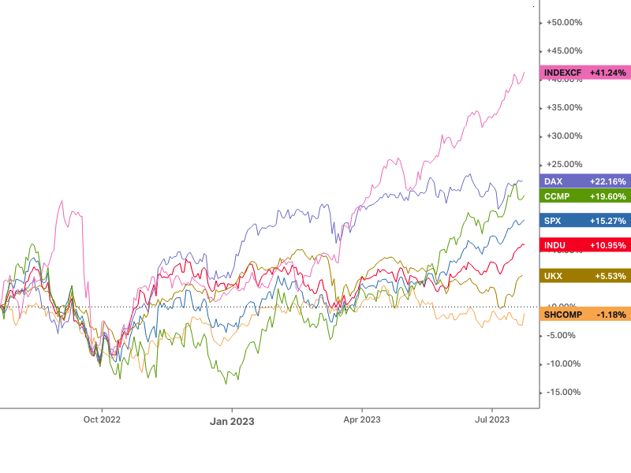

Jak je v grafu od začátku roku je vidět, že nejvíce letos dařilo Německu(DAX), které od začátku roku přidalo 26.53 %. V posledních měsíích jsou vidět dominantní technologie (CCMP), celkově rostou více než index S&P 500 Jak je v grafu od začátku roku je vidět, že nejvíce letos dařilo Německu(DAX), které od začátku roku přidalo 26.53 %. V posledních měsíích jsou vidět dominantní technologie (CCMP), celkově rostou více než index S&P 500 Jak je v grafu od začátku roku je vidět, že nejvíce letos dařilo Německu(DAX), které od začátku roku přidalo 26.53 %. V posledních měsíích jsou vidět dominantní technologie (CCMP), celkově rostou více než index S&P 500...
Srovnání světových ekonomik
